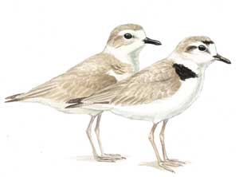

The Info
The sign at you favorite beach reads “Public Property, No Trespassing, Your Tax Dollars at Work” saving the snowy plover. What is the snowy plover and why is beach public access being denied or restricted? This is a good question, since the plover has always been a common bird in the United States. Why is it protected; it was federally listed as threatened under the Endangered Species Act of 1973.. The United States Fish and Wildlife Service decided that the snowy plovers that nest along the west coast of the United States are separate population from those that nest at inland sites. Instantly, the coastal populations of the snowy plover were reduced so that they could meet the criteria for listing it as a “threatened species” a under the Endangered Species Act. Loss of public beach followed. Snowy plovers were not hunted into near-extension, poisoned by pesticides, eaten by dogs, stomped on by horses, scared to death by people flying kites or run over by joggers. A human decision created the alleged decline of the snowy plover. Human, conservation managers in particular have failed to recognize that ” There is no balance in nature there are only relative rates of change.” It is impossible to try to maintain the balance of nature that existed in the past.
Welcome to PloverStomp.com and a realistic perspective on beach access and conservation.
Biological Information about the Snowy Plover
The western snowy plover is a small shorebird, about 6 inches long, with a thin dark bill, pale brown to gray upper parts, white or buff colored belly, and darker patches on its shoulders and head, white forehead and eyebrow line. Snowy plovers also have black patches above their white forehead and behind the eye. Their dark gray to black legs are a useful characteristic when comparing them to other plover species. Plovers forage for small invertebrates in wet and dry sand, in beach kelp, and within low dune vegetation along the beach. Most sandy beaches along the coasts of California, Oregon, and Washington are considered snowy plover breeding and wintering areas. Most publicly owned sandy beaches are also considered breeding and wintering areas. These areas are subject to the Recovery Plan beaches in Southern California are heavily used by the public and routinely subjected to beach racking (aka bull-dozed) . This makes it unlikely that the Recovery Plan can be implemented in these areas. Therefore, the beaches in the less populated areas of the west coast of the United States are the prime target for implementation of the Recovery Plan. Thousands of miles of coastline are threatened with closure or restricted human access in order to provide habitat for a bird that is very common.
The Environmental Information
Legal Status: Threatened
The Pacific coast population of the western snowy plover was listed as threatened on March 5, 1993. Federal Register 58 FR 12864.
Designation as a threatened includes: Any species which is likely to become an endangered species within the foreseeable future throughout all or a significant portion of its range.
Population Decline
Records indicating that nesting western snowy plovers were historically more widely distributed in coastal California, Oregon, and Washington are unsubstantiated.
Humans caused population decline
It is claimed that human activities, such as walking, jogging, running pets, horseback riding, and vehicle use, are responsible for the ongoing decline in snowy plover breeding sites and populations. Many scientific studies concerning the impacts of humans on snowy plovers are contradictory. The west coast nesting season, from March through September, coincides with the most popular times of human beach use (Memorial Day through Labor Day).
The Politcal side of things
Why is the Pacific coast population of the western snowy plover protected as threatened species under the Endangered Species Act of 1973? Because human have decided that they are responsible for maintaining the balance of nature. This point of view maintains that humans control their own destiny and that of all life on Earth. In short we are “Anthropocentric”, the human species is considered the center of the universe everything in the universe is conceived in terms of human values. We are uncomfortable with the idea of the randomness and constant change we see in life and the world around us. Conservation managers in particular, have failed to recognize that ” There is no balance in nature there are only relative rates of change.” It is impossible to try to maintain the balance of nature. The terms ‘ecosystem and ecosystem health’ are ill-defined and associated with an outmoded, superorganismic view of the ecosystem.
The U.S. Fish and Wildlife Service, is committed to applying an ecosystem approach to conservation to allow for efficient and effective conservation of the nation’s biological diversity (U.S. Fish and Wildlife Service 1994). The goal of this policy is to incorporate ecosystem considerations in the development and implementation of recovery plans for communities or ecosystems. In particular, these recovery plans shall be developed and implemented in a manner that conserves the biotic diversity of the ecosystems upon which the listed species depend. The idea is that improved habitat conditions for co-occurring species within the coastal beachdune ecosystem will undoubtedly occur through attainment of western snowy plover recovery plan objectives.
The snowy plover is being used as an Umbrella species or Flagship species: A species that needs such large tracts of habitat that supposedly saving it will automatically save many other species. Because it is so difficult to monitor and manage every aspect of biodiversity, several shortcuts have been proposed whereby we monitor and/or protect single umbrella or flagship species, such as the snowy plover.
Unfortunately, monitoring of the single umbrella or flagship species is grossly inaccurate, and moreover impossible to attain. The success of this policy, however, is guaranteed. The political impact is to increase funding for more restoration efforts and monitoring of the flagship species, and thus the governance of those efforts. Increased monitoring and restoration efforts might easily disturb the natural recovery of the flagship species, and reinforce the policy.
A flagship species, such as the snowy plover, is charismatic and is used to successfully anchor a conservation campaign because it arouses sympathy, public interest, and stimulates conservation awareness, action, and funding for its protection. Sympathy for flagship species are often very expensive in terms of lost public coastal access and have negative economic impacts for residents and tourists alike.
The Monetary
Protecting the western snowy plover is expensive. Results are tenuous and do not justify the cost.
ESTIMATED COST OF RECOVERY: $150,000,000 plus additional costs that cannot be estimated at this time.
DATE OF RECOVERY: Delisting could occur by 2047 if the recovery criteria above have been met.
The cost of this burden is public coastal access. Publicly owned beaches, military bases, and other government controlled coastlines are subject to closure. Private beaches, are not subject to the Snowy Plover Recovery Plan or closure to their owners.
The Recovery Plan of Snowy Plovers
Highlights of the Snowy Plover Recovery Plan
The western snowy plover recovery plan provides a strategy for recovery of the population. Recovery objectives in the recovery plan include: (1) achieving well-distributed increases in numbers and productivity of breeding adult birds, and (2) providing for long-term protection of breeding and wintering plovers and their habitat.
The recovery plan states that delisting will be considered when the following criteria have been met:
- maintain for 10 years an average of 3,000 breeding adults
- maintain a 5-year average productivity of at least 1.0 fledged chick per male in each recovery unit in the last 5 years prior to delisting; and
- have in place participation plans among cooperating agencies, landowners, and conservation organizations to ensure protection and management of breeding, wintering, and migration areas
DATE OF RECOVERY: Delisting could occur by 2047 if the recovery criteria above have been met.